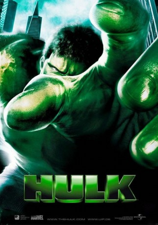

#721 Hulk
 
 IMDB-Wertung: 5.7 / 10
IMDB-Wertung: 5.7 / 10  Metascore: 54
Metascore: 54 
Bruce Banner (Eric Bana) macht zusammen mit seinem Team - darunter seine Ex-Freundin Elisabeth "Betty" Ross (Jennifer Connelly) - Experimente mit Gamma-Strahlung und deren Einfluss auf lebende Organismen. Eines Tages geht eines ihrer Experimente schief und Bruce wird durch einen Unfall einer eigentlich tödlichen Dosis Strahlung ausgesetzt. Er überlebt jedoch unverletzt und fühlt sich stärker und besser denn je. Doch seitdem geschieht seltsames. Albträume plagen ihn, er wacht mit völlig zerrissener Kleidung auf, Gedächtnislücken – irgendetwas ist bei dem Unfall mit ihm geschehen. Oder wurde nur etwas in ihm freigesetzt, das schon immer tief in seinem Innersten schlummerte? Als ob dies nicht schon schlimm genug wäre, ist da noch dieser Mann, der ihm seit neuestem auf Schritt und Tritt folgt...
Jahr: 2003
Dauer: 138 Minuten
FSK: 16
Land: USA Studio: Universal PicturesTonspuren: DTS - ,
Untertitel: Deutsch, Englisch,
Auflösung: 1080p (1920x1040) Größe: 13619 MB
Genre: Action, Sci-Fi
Regisseur:  Ang Lee
Ang Lee
Drehbuch: Stan Lee, Jack Kirby, James Schamus, John Turman, Michael France
Soundtrack: Danny Elfman
Darsteller:
 Eric Bana als Bruce Banner
Eric Bana als Bruce Banner Jennifer Connelly als Betty Ross
Jennifer Connelly als Betty Ross Sam Elliott als Ross
Sam Elliott als Ross Josh Lucas als Talbot
Josh Lucas als Talbot Nick Nolte als Father
Nick Nolte als Father Cara Buono als Edith Banner
Cara Buono als Edith Banner Kevin Rankin als Harper
Kevin Rankin als Harper Celia Weston als Mrs. Krensler
Celia Weston als Mrs. Krensler- Mike Erwin als Teenage Bruce Banner
 Lou Ferrigno als Security Guard
Lou Ferrigno als Security Guard Stan Lee als Security Guard
Stan Lee als Security Guard- Regi Davis als Security Guard
- Geoffrey Scott als President
- Regina McKee Redwing als National Security Advisor
 Daniel Dae Kim als Aide
Daniel Dae Kim als Aide- Daniella Kuhn als Edith's Friend
- Rhiannon Leigh Wryn als Betty Ross as Child
- Lou Richards als Pediatrician
 Jenn Gotzon als Waitress
Jenn Gotzon als Waitress- Toni Kallen als Delivery Nurse
- Paul Hansen Kim als Officer
- Lorenzo Callender als Soldier
- Johnny Kastl als Soldier
 Jesse Corti als Colonel
Jesse Corti als Colonel- Mark Atteberry als Technician
- John Maraffi als Technician
 Michael Papajohn als Technician
Michael Papajohn als Technician- David St. Pierre als Technician
 Boni Yanagisawa als Technician
Boni Yanagisawa als Technician Sean Mahon als Comanche Pilot
Sean Mahon als Comanche Pilot Kirk B.R. Woller als Comanche Pilot
Kirk B.R. Woller als Comanche Pilot John Prosky als Atheon Technician
John Prosky als Atheon Technician Victor Rivers als Paramilitary
Victor Rivers als Paramilitary- Lyndon Karp als Davey
- Rory J. Aylward als Second Tank Commander , uncredited
- Paul Kersey als Young David Banner
- Todd Tesen als Young Ross
- Craig Damon als Security Guard
- Michael Kronenberg als Bruce Banner as Child
- David Kronenberg als Bruce Banner as Child
- Louanne Kelley als Delivery Doctor
 John Littlefield als Security NCO
John Littlefield als Security NCO- Todd Lee Coralli als Soldier
- Eric Ware als Soldier
- Rob Swanson als Colonel
- Eva Burkley als Technician
- Rondda Holeman als Technician
- David Sutherland als Tank Commander
- Brett Thacher als Comanche Pilot
- Randy Neville als F-22 Pilot
Datei: X:\Comic-Filme\Hulk\Hulk (2003, FSK16, 1920x1040).mkv seit 16.03.2015
Festplatte: Comicverfilmungen+MusikCD
 Alle Filme aus Gruppe 'Comic-Filme\Hulk'
Alle Filme aus Gruppe 'Comic-Filme\Hulk'